SaltBot feedback review
This report is not ready to share yet.
Nothing is presented as finished until every user check and visual record is complete and available on this page.
Open Tina’s original feedbackSaltBot client review
What was reported, what changed, and how we checked it.
Every result is shown in plain English.
The newest user replay appears first with the original problem and the matching corrected result beside it. Large images and recordings play directly on this page. The original 52-point register remains below, while approval, public release, and Apple delivery stay clearly separated from completed review testing.
Prepared forTinaSidneyJulian
Final user replay
The exact Forest Creek request now completes without the error Tina saw.
We repeated Tina’s exact address and wording in a new conversation. SaltBot returned ten usable hooks, accepted “Give me 10 better hooks” in the same conversation, produced ten different replacements, and kept both results after reopening the browser and the iPhone app.
The reported issue and the matching result
The same prompt is shown on both sides. No substitute prompt was used.
The Forest Creek request stopped at “Failed to fetch” and offered only Retry.
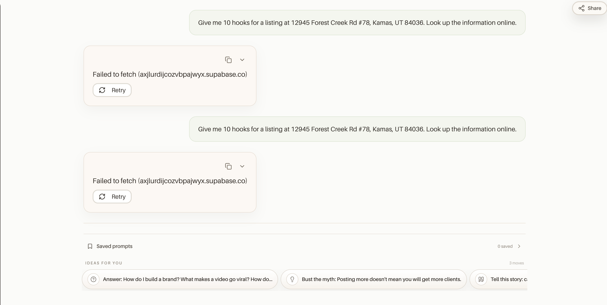
The exact address and wording now return ten visible, grounded hooks in one result.
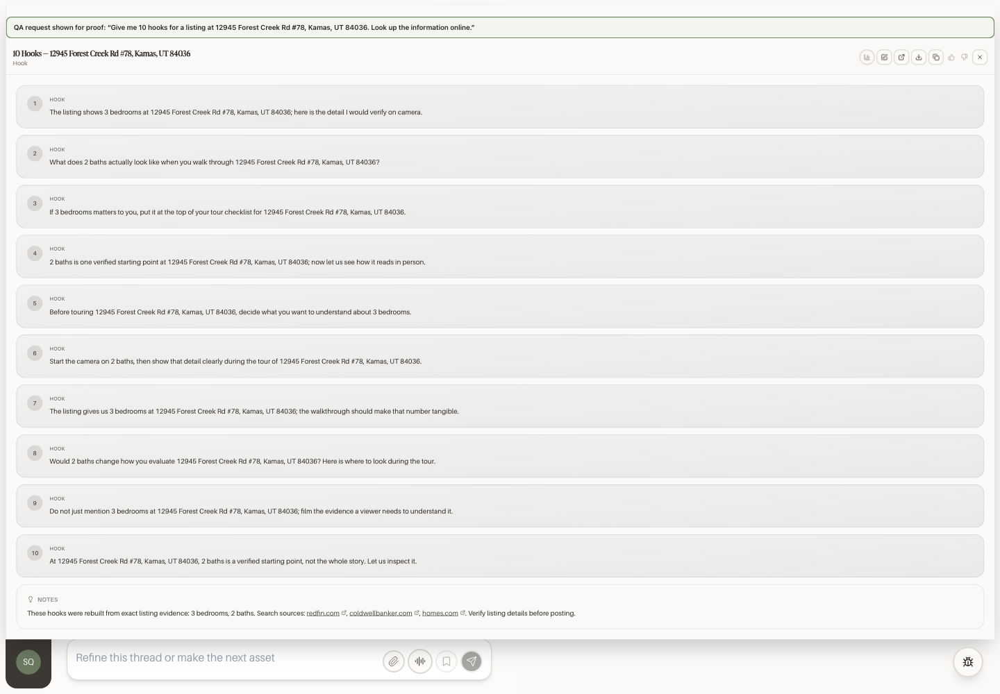
An additional problem caught during retesting
“Give me 10 better hooks” now returns a complete new set instead of another Retry message.
Our user replay found that the first result worked, but the same-conversation revision still stopped at Retry.
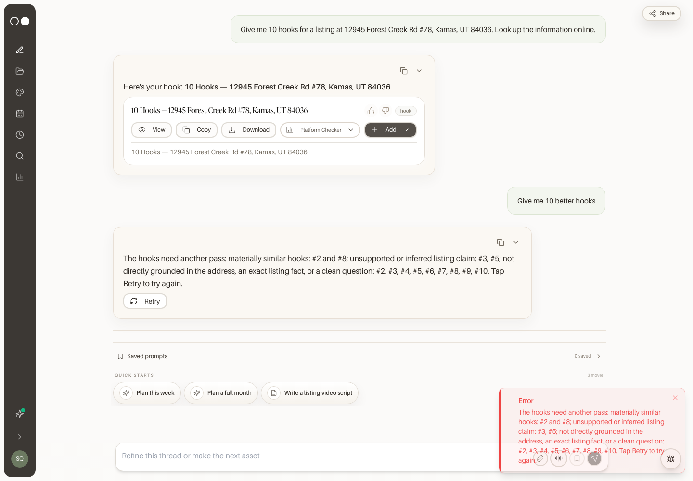
All ten replacements are visible here. None repeats a hook from the first set, and the exact set remained after reloading.
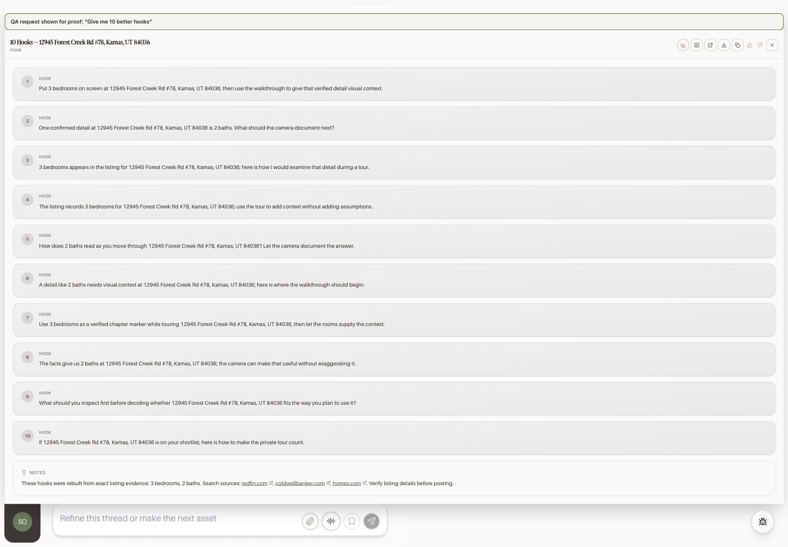
Short visual preview
See the original and replacement results together.
This animation plays automatically. The complete user journey is available in the recording beside it.
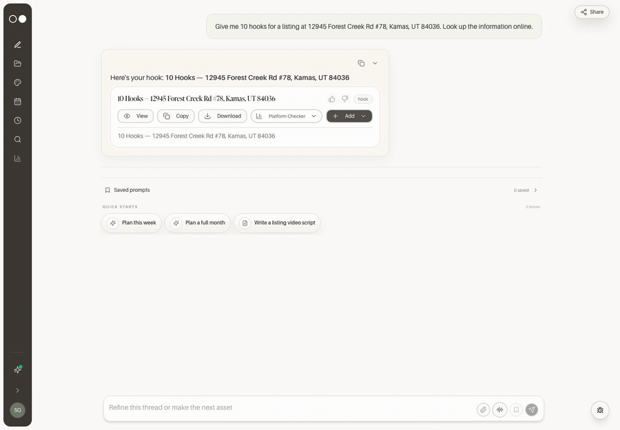
Phone-sized web replay
The same conversation also completes on a phone-sized screen.
The result stays readable and saved at 390-pixel width. Tap play to watch the complete phone-web journey.
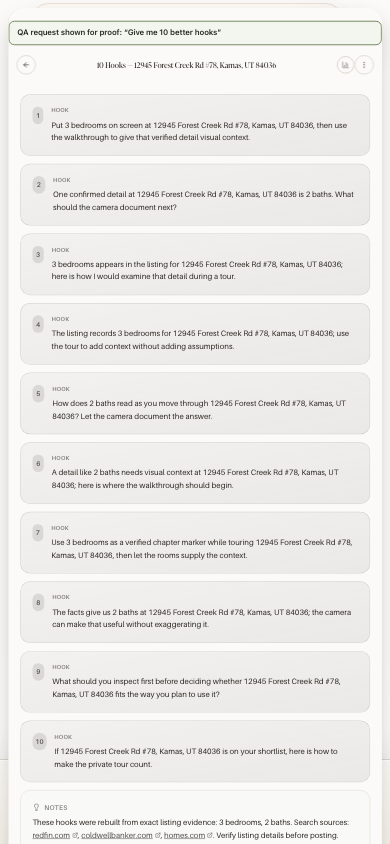
Clean iPhone app replay
The corrected conversation also survives a complete iPhone app close and relaunch.
A clean iPhone build signed in with a temporary member, created both sets of ten hooks, closed completely, and reopened with the replacement result still saved. The recording is playable here.
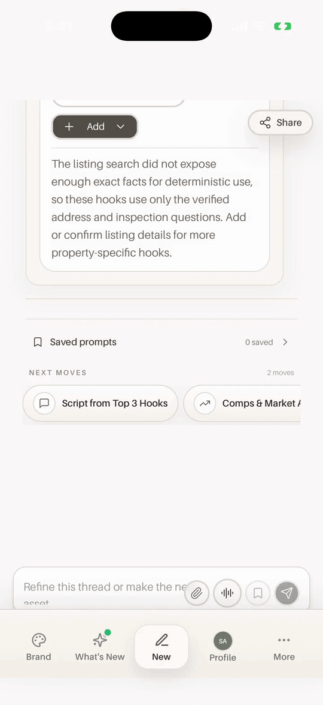
What was checked as a user
The result had to remain useful after the first success screen.
- Signed in with a new, temporary member account.
- Sent Tina’s exact Forest Creek address request in a new conversation.
- Confirmed one response with exactly ten complete hooks and no unsupported claims.
- Sent the exact follow-up: “Give me 10 better hooks.”
- Confirmed ten different replacements with the same property still in context.
- Reloaded the page and confirmed that both saved results returned unchanged.
- Repeated the journey on desktop web, phone-sized web, and a clean iPhone app build, with every service response successful.
- Closed the iPhone app completely, reopened it, and confirmed that both ten-hook results were still saved.
- Confirmed Paige-style unlimited access and the customer-help route to hello@saltcinema.com in the iPhone build.
- Removed every temporary account and its test records after the replays.
Earlier review-link correction
The review link now stays on the exact SaltBot version Tina and Sidney are evaluating.
Sidney opened the review address and received an older version. The current Dashboard and Brand Studio were not both available, Brand Studio returned a page-not-found screen, and the retired Listing Reel was still present. The stable review address is now permanently tied to the current review version.
Issue and correction, side by side
The outdated experience is replaced by the complete current review version.
The older Dashboard and menu appeared; Brand Studio was missing while the retired Listing Reel was still visible.
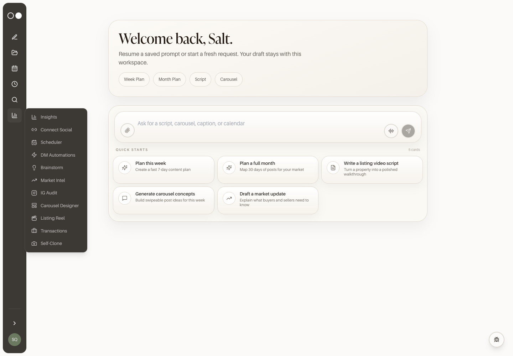
The current Dashboard opens with Brand Studio available, and Listing Reel no longer appears.
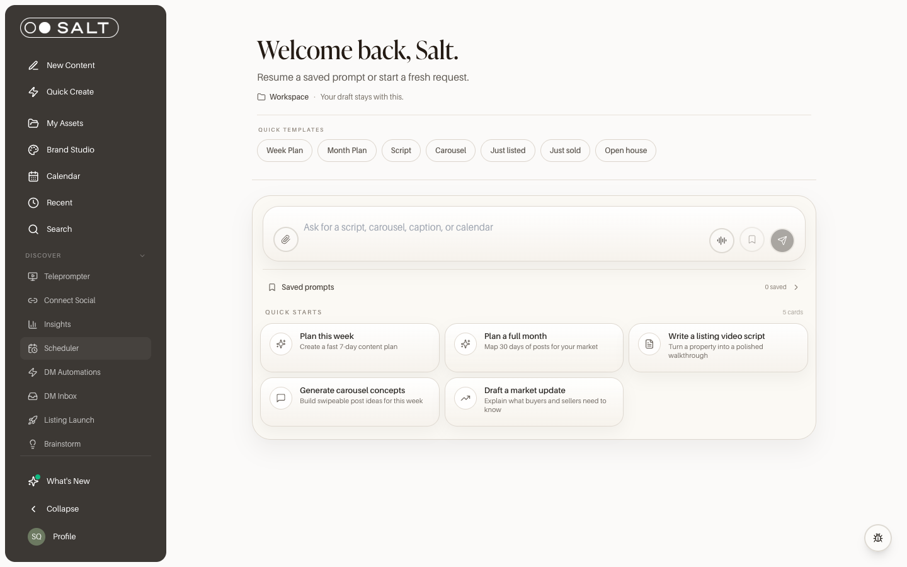
The older review version returned a page-not-found screen.
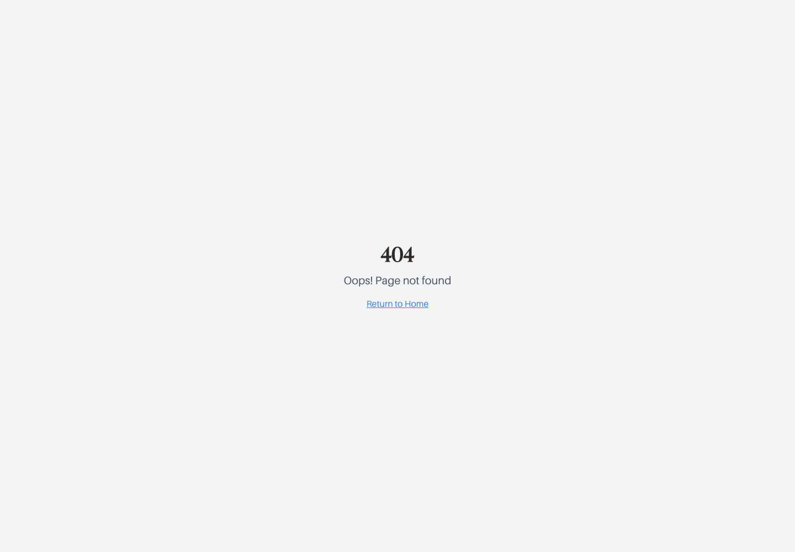
The same destination now opens the complete Brand Studio in the current review version.
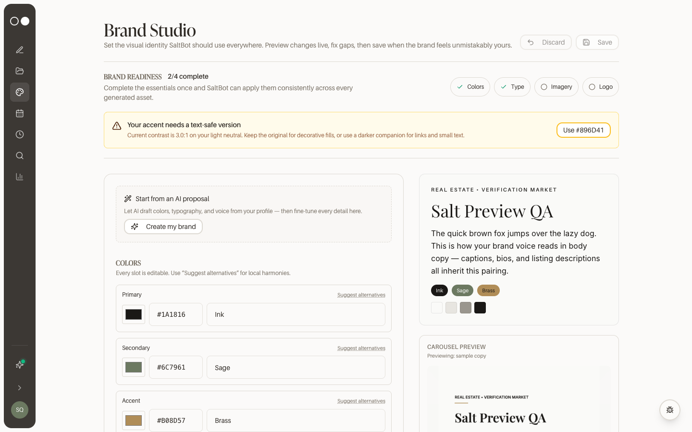
The current Dashboard and corrected menu remain complete and readable on a phone-sized screen.
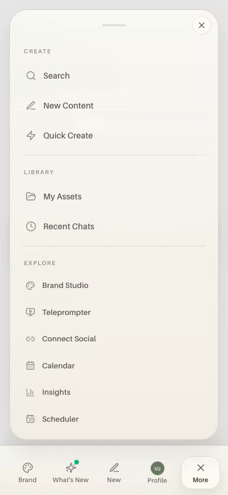
Brand Studio also opens normally at phone width.
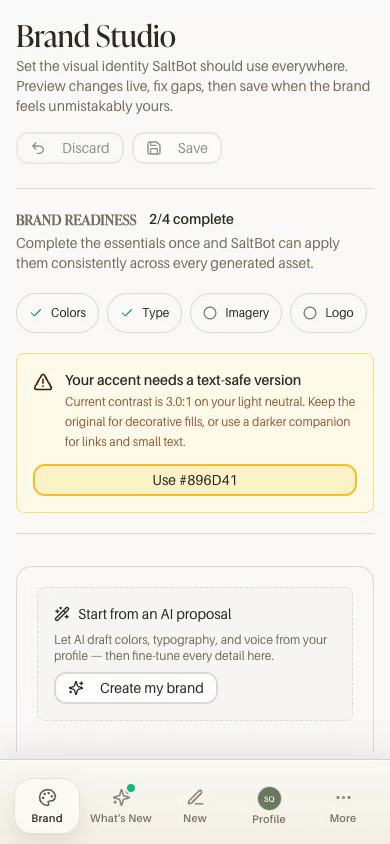
What was repeated as a reviewer
The exact review address was checked on desktop and phone-sized screens.
- The public review address opened without a private access wall.
- The current Dashboard opened with Brand Studio available in the signed-in menu.
- The retired Listing Reel was no longer offered.
- Brand Studio opened from the menu instead of returning a missing-page message.
- Those results remained correct after a fresh page load at desktop and phone widths.
- The temporary reviewer account and its linked review records were removed, and the cleanup was confirmed.
Current desktop review
Watch the complete menu and Brand Studio open from the stable address.
The short preview plays automatically. The complete recording is playable here without opening another page.
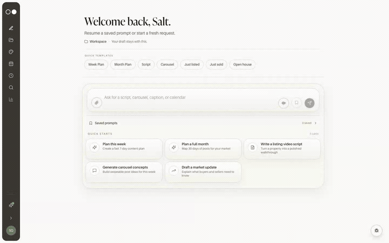
Current phone-sized review
Watch the same corrected review journey at phone width.
The recording confirms that the complete menu and Brand Studio remain usable on a small screen.
Latest account follow-up
Paige’s SaltBot access is active. The incorrect Blueprint warning is gone.
Sidney’s first review attempt revealed an incorrect expired-access message on Paige’s sign-in. We corrected Paige’s account and the shared sign-in rule, moved customer help to hello@saltcinema.com, and repeated the journey on web and in the current iPhone build.
Before and after
The exact problem is shown beside the corrected iPhone experience.
The sign-in screen called Paige a Blueprint customer, said access ended June 3, and directed her to an inbox that was not monitored.
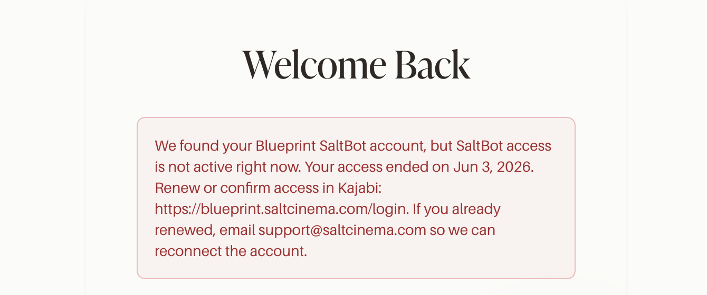
The iPhone experience no longer guesses a subscription, reveals account details, or changes a password unless the member chooses to request a secure link.
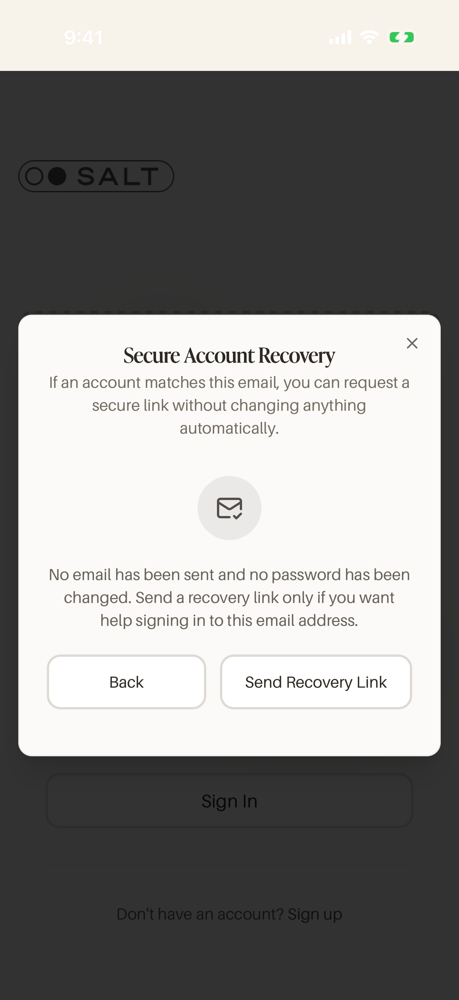
The account profile now shows an active status with no ending date. Customer email details are intentionally excluded from this proof.
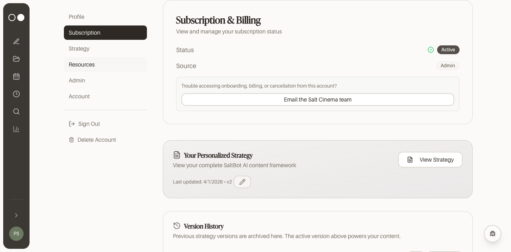
After the access correction, we asked for a new sunny-open-house caption and received a complete result. The test item was removed after the recording.
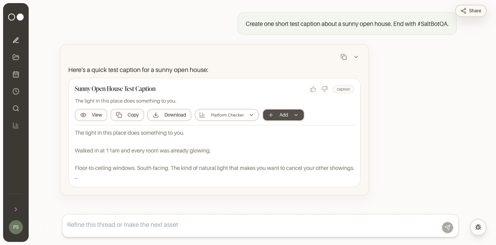
The clean iPhone replay asks for an email without revealing whether it belongs to a member.
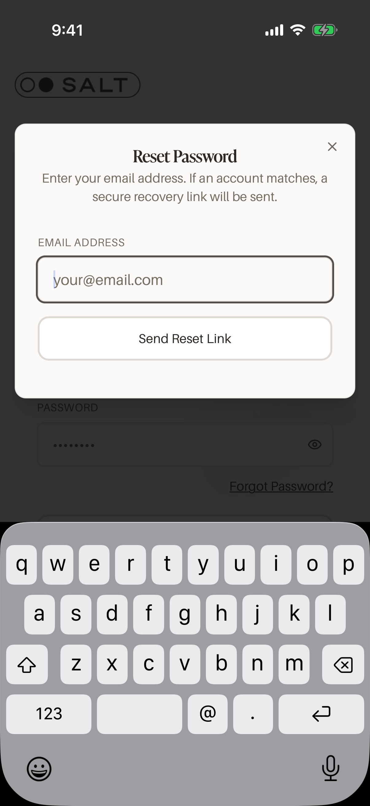
The imported-account path explains that no email or password changes happen until the member deliberately asks for a secure link.
What was repeated as a user
The correction was checked through the complete member path.
- The sign-in help opened without exposing whether an email belongs to a customer.
- No email was sent and no password was changed during the review.
- Paige’s profile showed active access without an expiration date.
- A real SaltBot prompt returned a complete new result.
- Customer-help links pointed to hello@saltcinema.com.
Web sign-in and recovery
Watch the corrected web recovery path.
The short preview plays automatically. The complete web recording can be played here without opening another page.
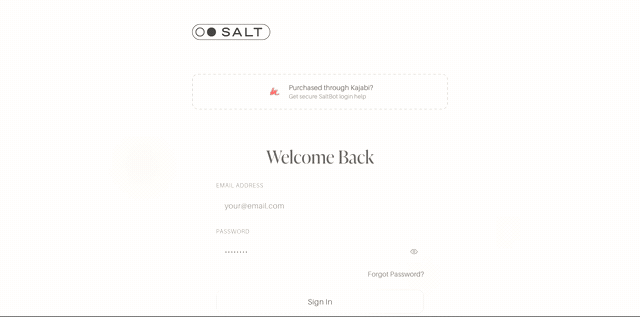
iPhone sign-in and recovery
Watch the same check in the iPhone build.
This client view shows only the app screen, using a generic review address. The complete mobile journey is playable beside the short preview.
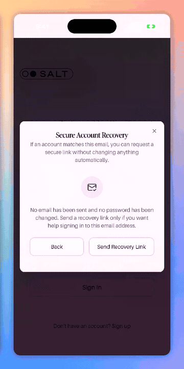
SaltBot access
Watch SaltBot complete a real request.
The recording shows the prompt being submitted and the new caption appearing inside the signed-in member experience.
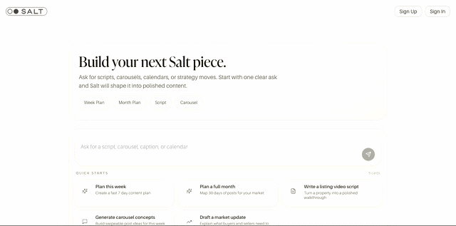
Latest recovery-link follow-up
Recovery links now wait for the member before they are used.
Esteban reported that an emailed recovery link appeared expired immediately. We recreated the failure and corrected both outcomes: simply opening or previewing the email no longer uses the one-time link, and an already-used link now gives the member a clear way to try again.
Before and after
A dead-end landing page is replaced with a useful recovery next step.
A recovery link that had already been consumed—including by an email security scanner—did not reach password reset and silently dropped the member on the generic SaltBot landing page.
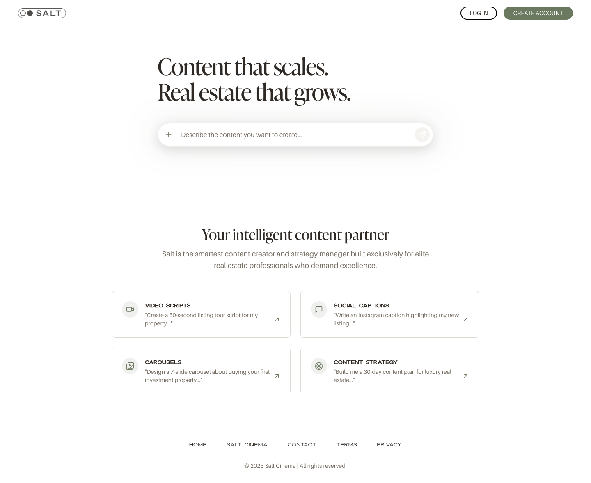
An already-used, expired, or incomplete link now explains what happened, offers a new reset link, and points to hello@saltcinema.com when help is needed.
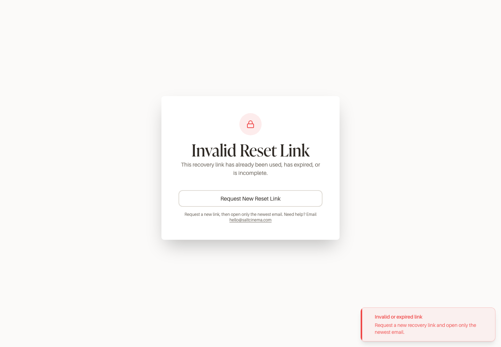
Opening the email on the public SaltBot app now shows a secure confirmation first. The one-time recovery link waits until the person deliberately selects “Continue Securely.”
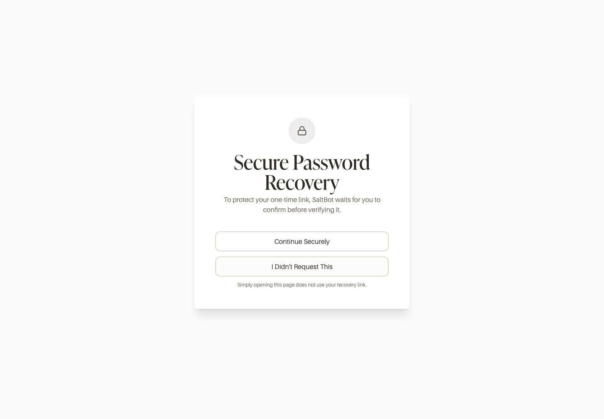
The public-app canary did not use the link on page load, used it once after the member clicked, and then opened the real new-password form.
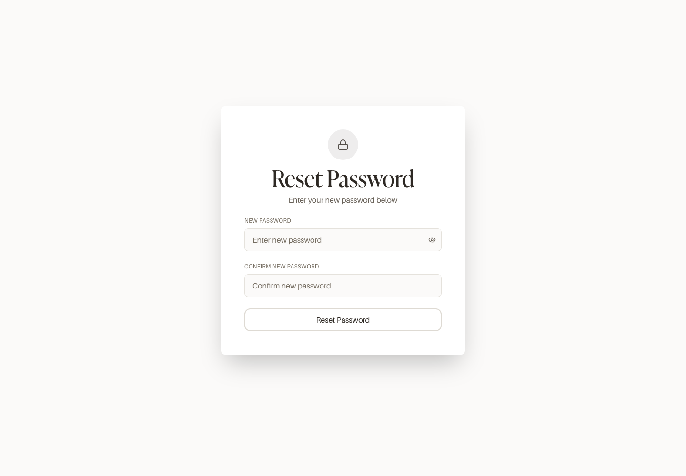
What was repeated as a user
Both first-use and already-used links now have a safe outcome.
- Opening the email link reached a secure confirmation screen without using it.
- The private one-time value was removed from the visible browser address before any action.
- Selecting “Continue Securely” started one recovery check—never one before the member’s click.
- An already-used or expired link showed a clear explanation and a button to request a new one.
- The recovery help route pointed to hello@saltcinema.com.
Complete recovery-link check
Watch the member-confirmation and password-reset path.
The public-app recording begins at the new confirmation screen, waits for a deliberate click, and then reaches the usable new-password form.
Public-app reused-link check
Watch the public app explain a link that was already used.
The same controlled link was opened again. SaltBot still waited for the member’s click, then explained that the link could not be reused and offered a new recovery request plus team help.
Latest iPhone answer follow-up
A useful SaltBot answer now stays useful—without a false red error.
The iPhone review found that SaltBot could return a valid conversational answer and then incorrectly add an “empty script” error underneath it. The live answer service now recognizes the useful response correctly, so the member sees one answer and no contradictory failure message.
Before and after
The same natural-light question now ends with one useful answer.
SaltBot gave a conversational answer, then incorrectly told the member that the generated script was empty and to try again.
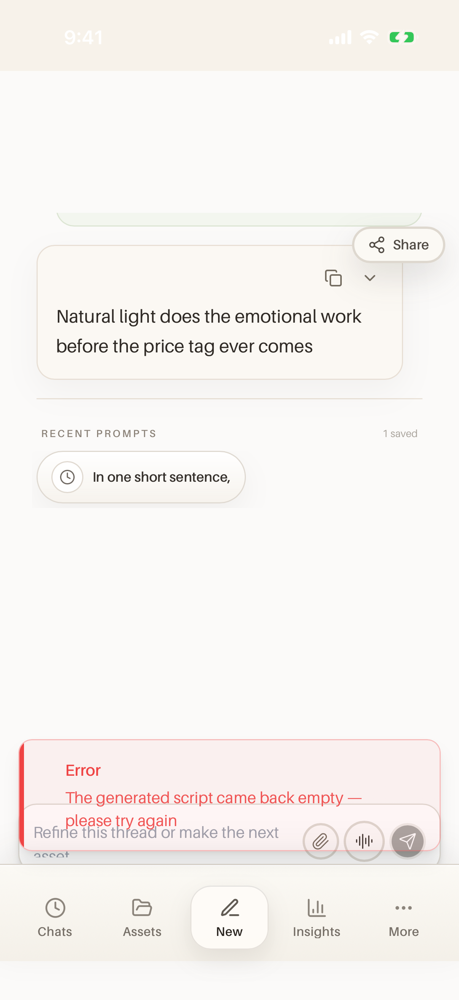
The same one-sentence natural-light request returns a complete answer and ends cleanly without the contradictory warning.
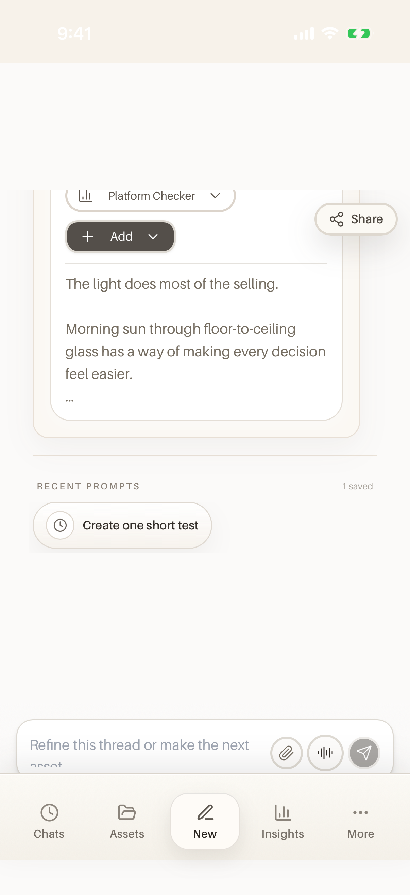
What was repeated as a user
The exact iPhone question was asked again against the live answer service.
- The signed-in iPhone app opened the new-conversation screen.
- The same natural-light question asked for one short sentence.
- SaltBot returned one complete, useful answer.
- No “empty script” error or red warning appeared after the response.
- The answer remained visible as the final result.
Complete iPhone answer check
Watch the exact question finish without the false error.
The recording begins after sign-in, shows the natural-light question generating, and ends on the useful answer with no red warning underneath it.
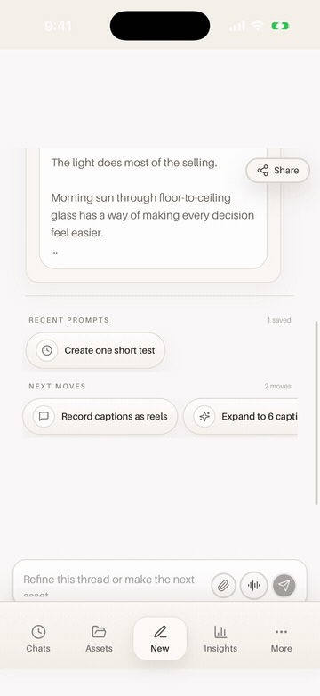
Latest public-sharing privacy correction
A shared SaltBot item now opens only through its exact private link.
Our follow-up review found that the public page looked correct, but the service behind it allowed a record to be requested with an ordinary item number. The production app and its protected data path were updated together. Exact share links still work; guessed, unknown, and revoked links do not.
Issue and fix, side by side
The old “item number” shortcut is closed; the exact share link still opens normally.
An ordinary item number could reach a public record without using the exact private link created by its owner. This plain-language diagram reflects the confirmed production behavior before the lock.
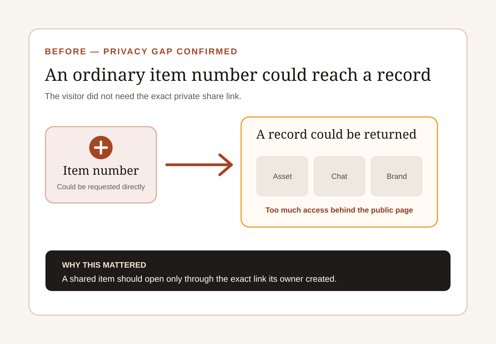
The real production page opens the one intended shared asset when its exact link is used. The item shown is a temporary, non-client privacy-check record.
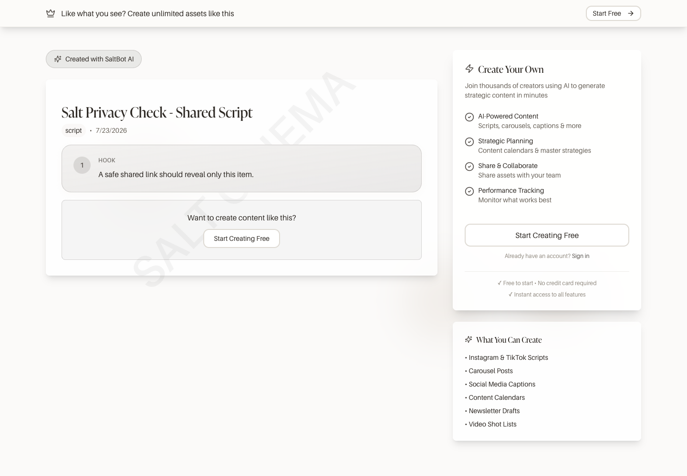
The temporary shared brand page opens on production only when its complete link is used.
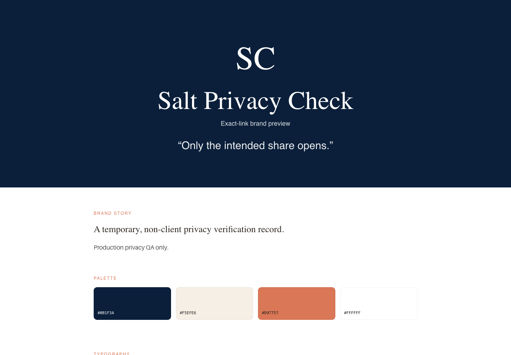
A made-up asset link returns a clear “Content Not Available” screen and reveals nothing.
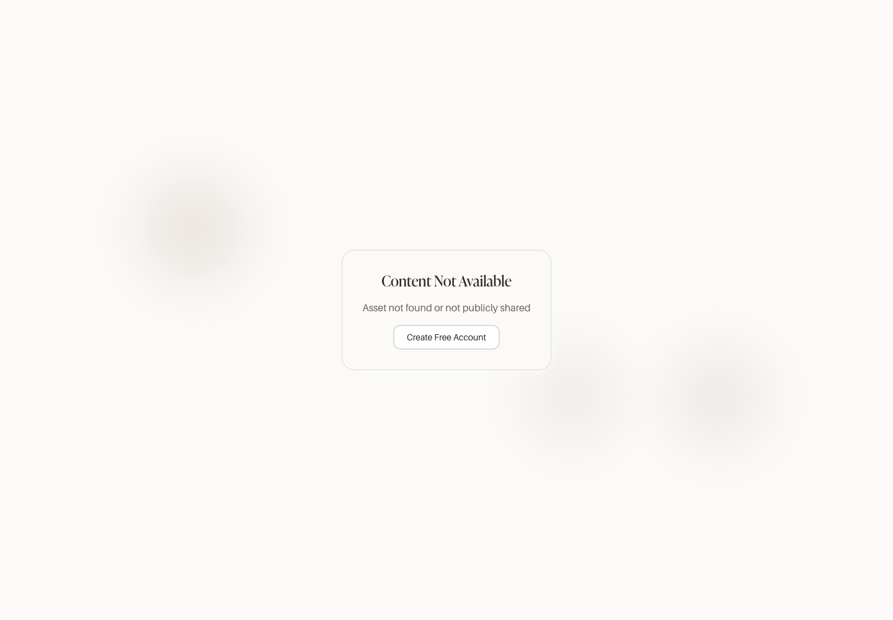
After a temporary conversation share was revoked, its old link returned “Chat Not Available.”
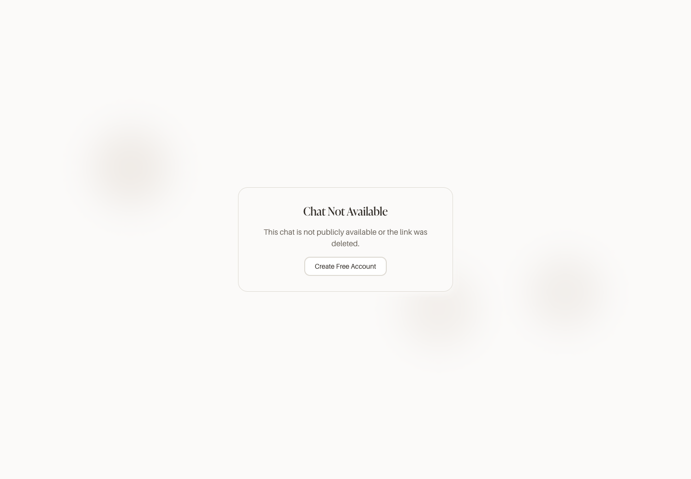
The revoked-link result remains clear and fully visible at 390-pixel phone width.
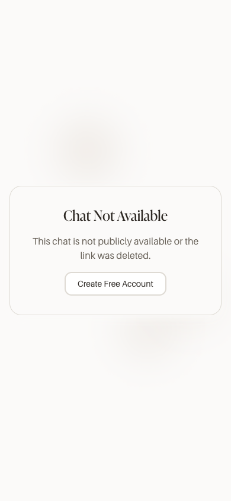
What was repeated as a visitor
Every public-sharing outcome was checked after the production lock.
- An exact shared asset link opened only that asset.
- An exact shared conversation link opened only that conversation.
- An exact shared brand link opened only that brand page.
- Unknown links returned no content, and a revoked link stopped working.
- The former direct-listing path was refused for assets, conversations, and brand pages.
- All temporary review records and the temporary account were removed, with an empty cleanup check afterward.
Desktop exact-link check
Watch the intended shared pages open in production.
The short preview and video show temporary shared conversation and brand pages opening through their exact links.
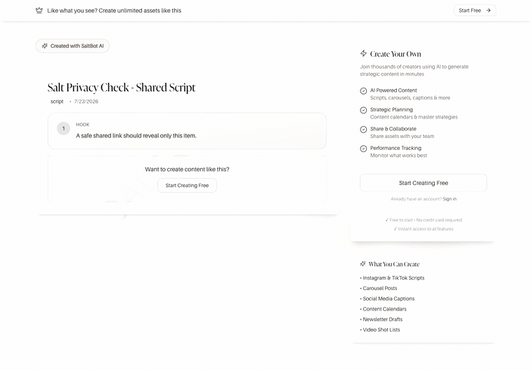
Phone exact-link check
Watch the same shared pages at phone width.
The production pages stay readable at 390-pixel width and reveal only the item reached through the exact link.
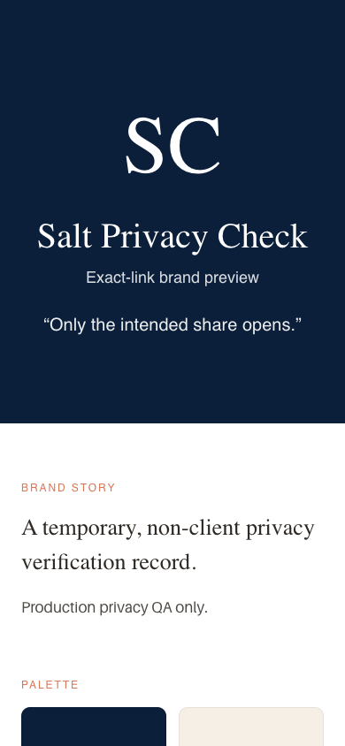
Revoked-link check
Watch an old link refuse access.
Once the temporary shared conversation was revoked, its former link returned a clear unavailable result.
The review
A complete, plain-English view of the July feedback.
How to read every status
Each label has one clear meaning.
The color tells you how far the member journey went and whether an outside approval or live account was intentionally left untouched.
The reported problem was corrected and the member journey reached the expected finish.
The reported path was repeated and already behaved correctly in the reviewed version.
Everything inside SaltBot was checked; the next step was stopped because it would change or contact a live account.
The private SaltBot step worked, but the live publishing or release action remains intentionally off.
The larger review is deliberately on hold and is not being presented as completed work.
Latest follow-up
Tina’s 13 newest points, each with a verified result.
Nine corrections completed the full member journey. Three account-connection checks stopped safely before changing a live social account, and the private scheduling check passed but still needs a deliberate release decision before it can affect Salt’s real queue.
Whole-product review
What is live in production—and what is ready only for review.
The focused production fixes, the full 52-point review version, outside-service success, and Apple delivery each have a different finish line. They are kept separate here so a preview or passing check is never mistaken for a release.
Current public web and focused iPhone proof
The focused corrections at the top of this report are live on the public web app, with the matching access, recovery, and answer journeys repeated in Apple’s iPhone Simulator.
- Paige’s unlimited access, neutral sign-in recovery, and hello@saltcinema.com help path are live.
- Password-recovery links now wait for the member’s deliberate click and give a clear retry if the link was already used.
- The valid-answer path no longer adds a false red “empty script” warning.
- Shared assets, conversations, and brand pages now require the exact link created by their owner. Unknown and revoked links reveal nothing.
- The old direct-listing path is locked for all three shared-content types, and every temporary review record was removed.
- A fresh production review passed 193 safe account, request, permission, and retry checks across all 42 reviewed live services.
What this means today: these focused corrections are live and verified. The 193 service checks prove safe handling of common account and request mistakes; they did not spend paid provider credits and do not claim that every outside provider completed a real paid success request.
Full 52-point feedback roll-up
The complete register remains 41 Done, 10 In Review, and 1 Backlog. The exact combined review version is now available at the stable preview address, while earlier recordings remain labeled with the saved versions they actually show.
- The stable preview address is permanently tied to the current review lane, so a normal production update cannot silently replace Tina and Sidney’s review version.
- The exact review version passed all 248 automated test files, completed its browser build, and produced a successful unsigned Release build in Apple’s iPhone Simulator toolchain.
- The archived July 20 candidate ran 297 automated test files twice. A later draft showed 298 because one additional file had been added on a different branch snapshot; those two totals are no longer combined or presented as one run.
- The fresh-install launch improvement is prepared, but it stays open until the exact roll-up candidate passes a new clean-install recording.
- The Self Clone private-storage correction is prepared, but it stays open until the exact roll-up candidate passes privacy readback and a safe fresh-install user replay.
- Every one of Tina’s 52 points still has its own explanation, visual record, and individual tracking item below.
Full roll-up approval, real providers, and iPhone delivery
The focused web corrections are live. The broader roll-up and real-world delivery checks remain separate steps.
- The automated release service is currently paused by an account billing limit.
- Tina’s approval must be tied to the exact saved review version and the required independent reviews before that version can replace the verified production hotfix.
- Real paid-provider success checks still depend on working outside-service access and available provider capacity.
- Apple signing and App Store Connect still need to be connected for this release, followed by a physical iPhone and TestFlight check.
- Tina’s Approve button records her decision, but it does not yet send the iPhone update to TestFlight or the App Store.
- A backup AI service account needs its balance restored; the working fallback handled the tested request.
- A safe test of the anonymous daily allowance could not target the same anonymous visitor through the public gateway. The allowance is not proven broken, but this one live confirmation remains open.
- The prepared fresh-install and Self Clone privacy corrections still need exact roll-up candidate proof before they can close.
Connect the exact approval
Prepare the reviewed iPhone build
Restore automated release checks
Require the exact approval before release
Connect Apple release access
Restore backup service capacity
Finish the anonymous allowance proof
Decide whether members need a general Share shortcut
Resolve the fresh-install launch delay
Keep Self Clone images private
Bind release proof to this stable report
Saved-version visual proof
Earlier completed corrections stay visible without being called the current roll-up.
Every image is shown at full width on the page. The public-sharing privacy section above is current production proof; the other cards remain labeled with the saved version where their recording was made.
Fresh-install iPhone launch
The slow first-launch finding has a prepared correction and still needs the exact roll-up replay.
Issue
On a fresh iPhone Simulator install, the Salt splash remained visible for roughly 20 seconds before the Welcome Back screen appeared.
What we checked
The saved iPhone build that exposed the gap was installed into a new Simulator and cold-launched twice. The first and second launch were each recorded from start to finish.
What the comparison shows
The second cold launch reached Welcome Back in roughly six seconds, which points to extra first-run loading rather than an app crash.
Current result
The correction is prepared in the separate roll-up branch. It remains open until that exact saved roll-up is installed fresh and produces a new after-fix recording.
The branded splash was still visible after eight seconds.
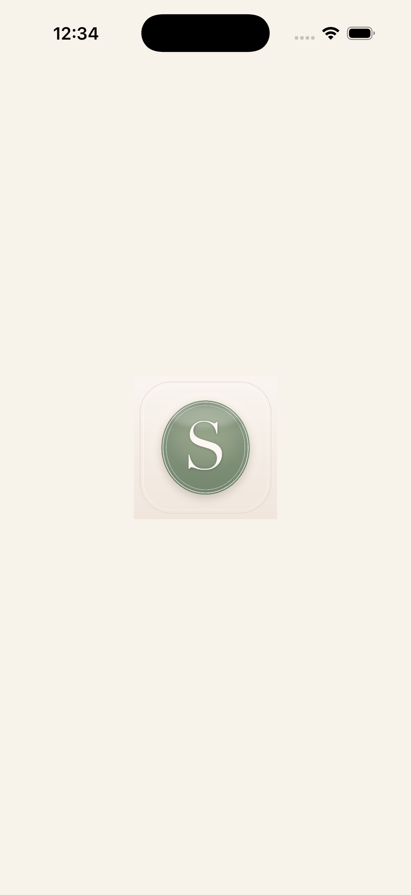
The Welcome Back screen appeared on the quicker follow-up launch.
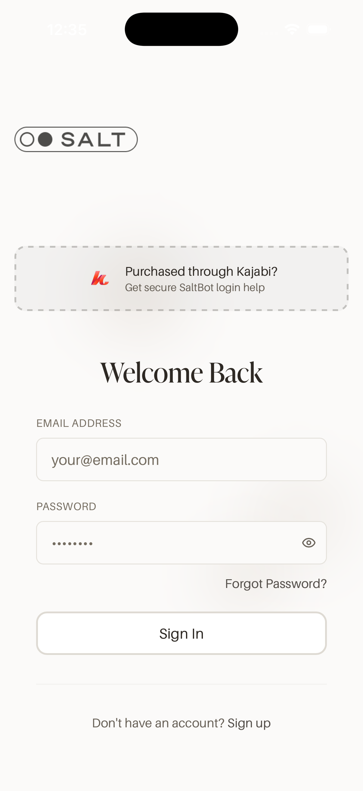
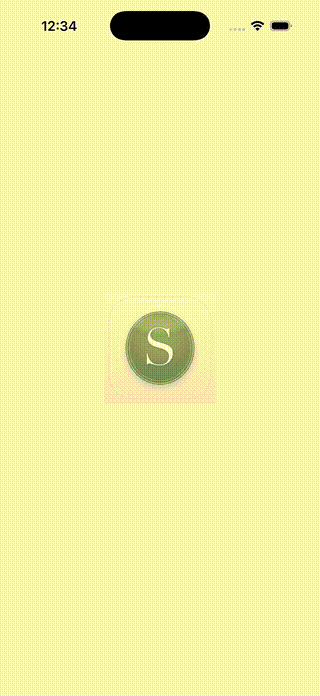
Public brand page
Dark brand colors no longer hide the brand story, type, voice, or copy.
Issue
A dark brand palette could make several sections nearly disappear against the public page background.
What changed
SaltBot now chooses readable foreground colors for every public brand section while preserving the client’s palette.
How it was user-tested
The public page was opened on desktop and phone-sized screens with 48 difficult color samples. Every sample passed, and the smallest measured contrast remained comfortably readable.
Result
The brand story, palette labels, typography, voice, and copy kit remain visibly readable from top to bottom.
The lower brand sections were present but almost invisible.
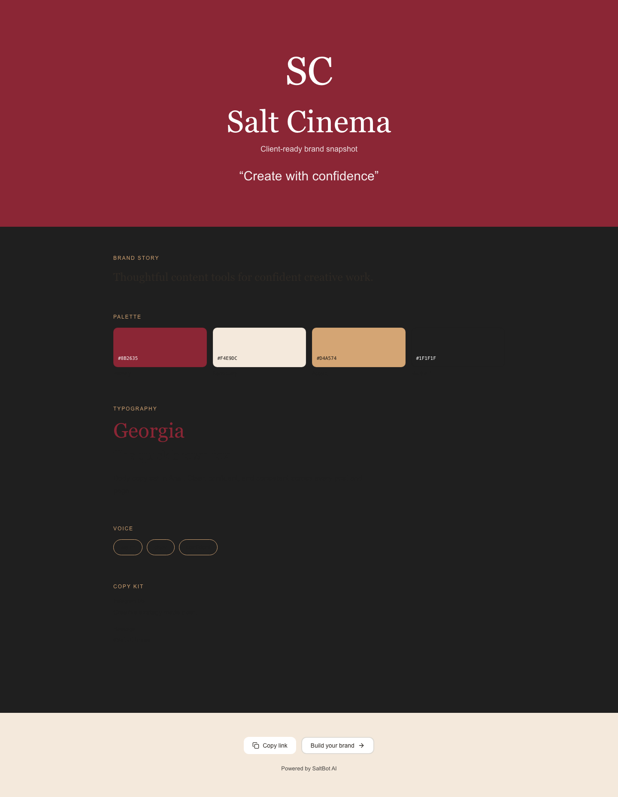
Every section is readable while the Salt Cinema colors remain intact.
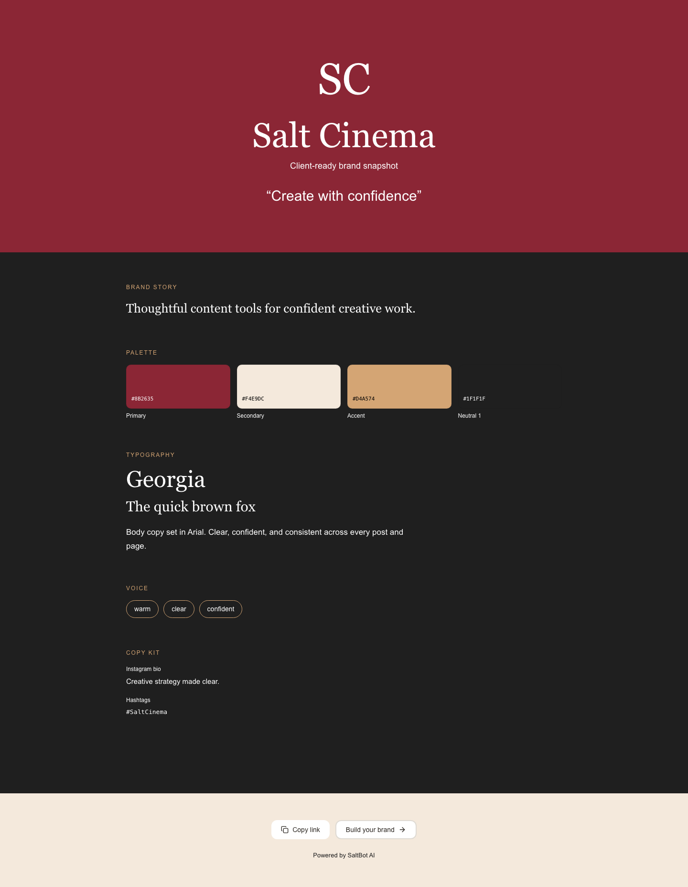

iPhone Brand Studio sharing
One tap now opens the real public brand page and returns safely to SaltBot.
Issue
The iPhone app could create an internal app address. Tapping it left the member on the same screen instead of opening the public page.
What changed
Every authenticated sharing action now creates a normal secure SaltBot web address, including Brand Studio, saved assets, conversations, profiles, and the app link.
How it was user-tested
The July 20 reviewed version was rebuilt, installed in Apple’s iPhone 17 Pro Simulator, and opened with a retained signed-in review session. Brand Studio opened the hosted public page in one tap; its palette and typography were reviewed; the browser was closed; and the same Brand Studio screen remained.
Result
The public page opened successfully, displayed the expected brand content, and returned to SaltBot without losing the member’s place.
The earlier one-tap check remained on Brand Studio and did not open a public page.
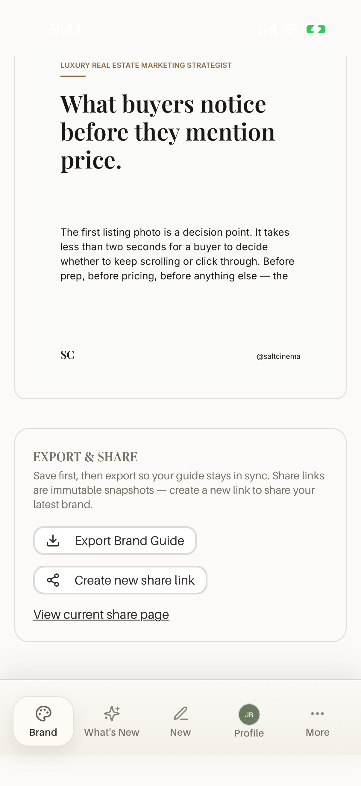
The hosted public Salt Cinema brand page opens with its readable sections.
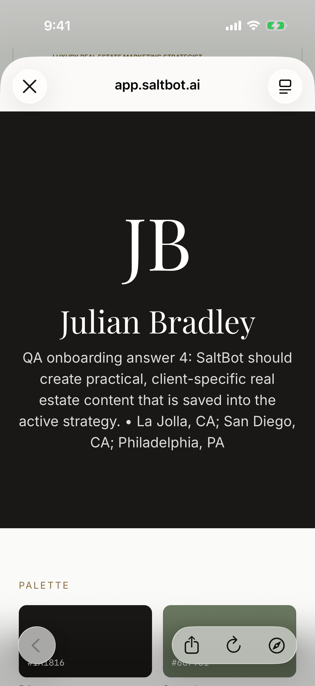
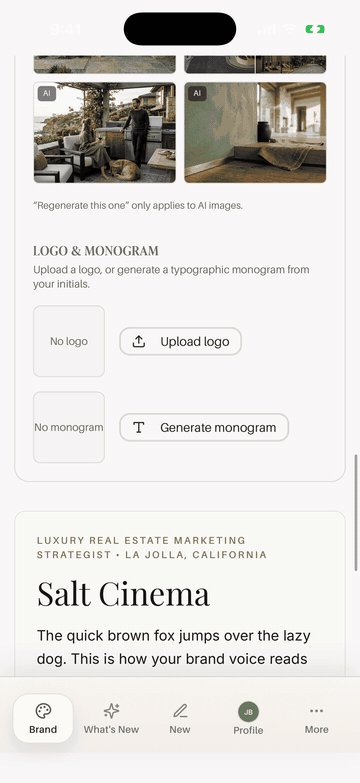
Phone-sized admin navigation
The menu is reachable, clears the iPhone notch, and keeps every action on screen.
Issue
Five protected admin pages contained navigation and Share actions, but the page did not provide a visible control to open them. The first correction also needed extra clearance for a notched iPhone.
What changed
Desktop and phone layouts now include a clear menu button, normal close behavior, and spacing that follows the device’s safe area.
How it was user-tested
The July 20 reviewed page was checked at desktop width and at 390×844 with a simulated 31-pixel iPhone safe area. The menu opened, remained fully inside the screen, copied the public SaltBot address, and closed by Share, Escape, and the backdrop without any horizontal scrolling.
Result
The phone menu starts below the header and notch, all actions remain visible, and the page stays usable at both widths.
The protected page had no visible way to open its navigation and Share actions.
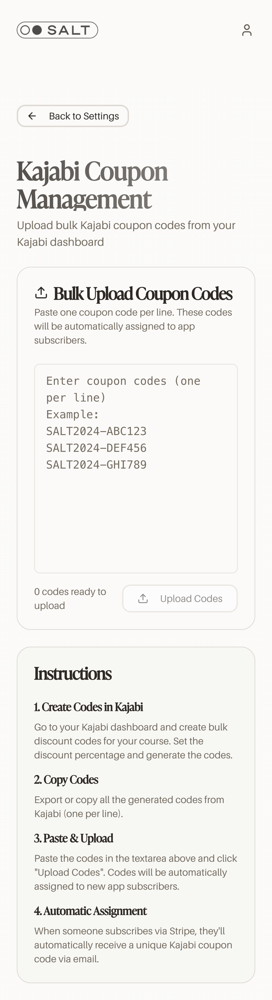
The complete menu is visible below the iPhone safe area.
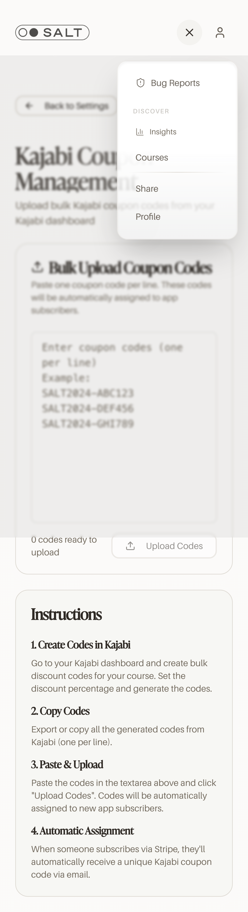
Live service safeguards
Common account, request, permission, and retry mistakes stop clearly without affecting a client account.
Issue
A service review can look complete even when it misses a newly deployed background service or mistakes a safe signed-out stop for a broken request.
What changed
The review now starts with an authenticated inventory of the live background services, then applies the correct expectation to each account type and request.
How it was user-tested
On July 23, the production review covered 193 safe boundary cases across all 42 reviewed live services. Disposable member and admin accounts were removed, and that cleanup was confirmed.
Result
All 193 checks passed. Missing sign-in, incomplete requests, missing records, repeated requests, and account permissions returned the expected safe result. The review did not spend paid-provider credits, publish client content, or alter client records.
An ordinary item number could reach one of the public records without the exact share link.
The exact link opens the intended temporary asset; unknown or revoked links reveal nothing.
Earlier visual proof
See the earlier completed journeys without opening a separate report.
These images and recordings remain the proof for the earlier reviewed version. They are clearly kept separate from current production and the unreleased roll-up.
Listing Launch interrupted-response check
One bundle for one member action—even when the first response is interrupted.
Issue
If the first answer did not reach the page, trying again could accidentally start the same paid work twice.
What changed
SaltBot now reopens the original request after an interrupted response instead of starting it again. A later click still starts a new request.
How it was user-tested
On the published review site, the first answer was deliberately hidden to reproduce an interrupted connection. The page reopened one bundle, and a later click started a separate action. No paid outside service or client data was used.
Result
One visible launch bundle appeared for each intentional member action, with no page errors.
The member is ready to generate the launch bundle.

The interrupted request reopens one complete bundle for the action.


Platform Checker interrupted-response check
An interrupted response now reopens one refined preview.
Issue
If the first Platform Checker answer did not reach the page, trying again could repeat the work instead of reopening the finished result.
What changed
After an interrupted response, SaltBot reopens the same request. Choosing Refresh data later remains a new action.
How it was user-tested
A signed-in member opened Platform Checker on the published review site. The first answer was hidden to reproduce an interrupted connection; one refined preview reopened, and Refresh data remained a separate choice. No paid search, saved content, or client data was changed.
Result
The interrupted request reopened one refined preview, and the later refresh remained separate.
Platform Checker is ready to pull data and refine the content.

The interrupted request returns one refined preview.


Additional safeguard found during the final review
Market Intel now checks the member and usage allowance before research begins.
Issue
A direct Market Intel request could begin research and AI work before confirming that it came from a signed-in member with an available allowance.
What changed
Market Intel now stops unsigned-in requests immediately and confirms one available usage allowance before it starts any research or AI work.
How it was user-tested
A signed-out production request stopped at sign-in without using an allowance. A signed-in synthetic review request then completed with one allowance. The member page was repeated on the published review site with a private review account and synthetic market figures.
Result
The signed-out boundary returned the expected stop, the signed-in request returned a complete report, the allowance advanced exactly once, and all synthetic test records were removed.
Market Intel is ready with synthetic market figures and no client information.
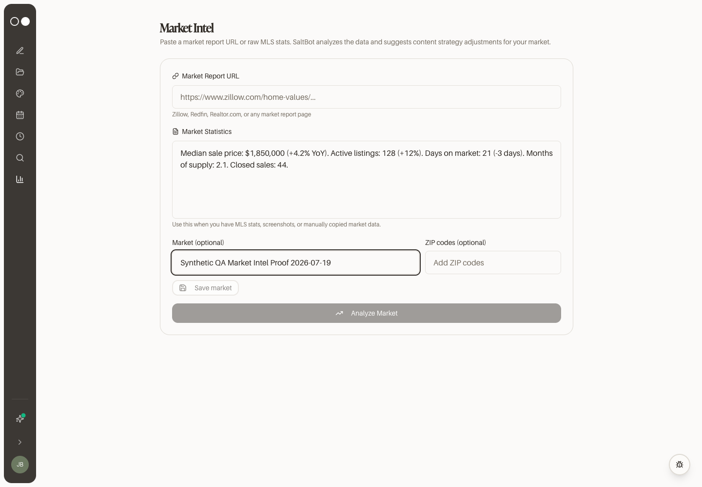
The signed-in request returns a complete balanced-market summary and key metrics.
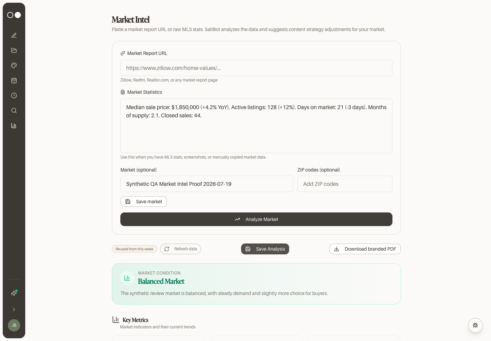
Earlier iPhone member experience
The earlier reviewed version passed the signed-in member journey and app-return checks.
Issue
The iPhone version needed its own signed-in check so a web result was not mistaken for proof of the mobile app.
What was prepared
The earlier iPhone review version was rebuilt cleanly and installed with release settings. It was then removed and installed again for an independent second first-launch check.
How it was user-tested
Two separate clean uninstall, reinstall, and cold-launch runs each reached the usable sign-in screen without the earlier blank pause. A signed-in review member then opened the Dashboard, submitted the weekly-calendar request once, reviewed all seven saved days and one day’s details, opened Brand Studio, moved the app to the background, returned, fully closed it, and launched it again.
Result
The clean first-launch check passed twice. The weekly request completed on its first submission with seven complete, distinct posts across seven days. Every checked member screen loaded, the session stayed signed in, and the app returned correctly after each lifecycle step.
Earlier release-candidate check
The earlier 1.3.0 Simulator build was rebuilt cleanly and opened after an upgrade.
That earlier candidate installed over the fully reviewed app, reopened the signed-in member experience, and retained the session after a cold relaunch. This record remains visible as earlier proof; the current combined candidate is being checked separately above.
The earlier calendar-recovery build retained the saved weekly Calendar after a full close and relaunch.
The earlier Release candidate reopened the signed-in member experience after the upgrade and cold relaunch.
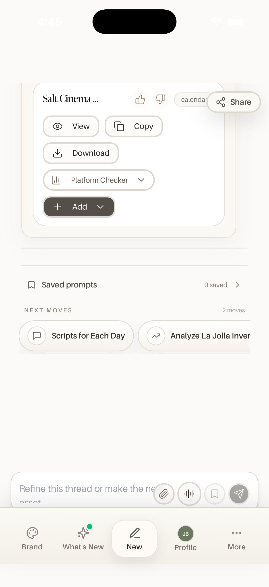
Earlier full member replay
The calendar and relaunch journey was repeated independently.
That earlier version passed two clean launches, returned a new seven-day calendar without repeating the prior one, and kept the same calendar after the app was fully closed and reopened.
The complete branded sign-in screen appeared without an empty pause.
The same earlier version reached the complete sign-in screen again.
A fresh first launch could pause on an empty screen before sign-in became usable.

The first clean reinstall and cold launch reached the usable sign-in screen without the empty pause.

The same reviewed version passed a second uninstall, reinstall, and cold launch, again reaching the complete sign-in screen without the earlier blank pause.


Jump to any result
All feedback, in Tina’s order.
Select a section or an individual item to move straight to its explanation and visual record.
How each result was checked
One clear standard, with no hidden gaps.
Completed recordings follow the member journey from the reported starting point to the visible finish. Open items name the missing proof, and safeguarded checks show where the review stopped to protect a live client account.
- 01
Repeat the issue
Follow the exact path Tina described and record the starting behavior.
- 02
Make the correction
Update only what is needed to make the complete user experience work.
- 03
Use it like a member
Complete the action from the signed-in SaltBot screen, including reloads when the result must remain saved.
- 04
Show the finish—or name the gap
Place the starting image and final image together. If the final user record is incomplete, say exactly what is missing instead of calling the point done.
Before and after
The issue and its result, side by side.
The images are shown at full useful width. Opening a larger view is optional.
Original feedback
Every review stays connected to the work.
The earlier 35-point review, Tina’s current review, and the newest follow-up remain available together. Every current point links to its individual Linear task and its own permanent section on this page.
Who this report is for
This review was prepared for Tina, Sidney, and Julian so the reported issue, completed check, and visual result can be reviewed together without technical notes.